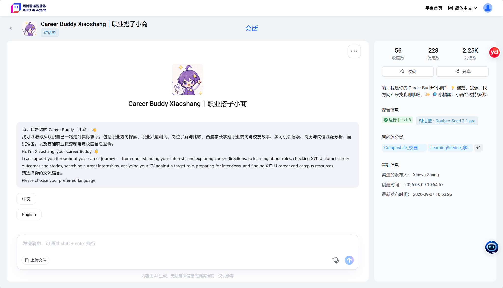

AI Used in This Study
Career Buddy Xiaoshang is the AI used in this study.
It is an XJTLU AI agent that supports students with career-related questions and resources.

Experiment Goal
To examine whether different AI tones affect XJTLU students’ usage time, task completion, and satisfaction.
Participants
A small-sample A/B test with 20–40 XJTLU students.
Independent Variable: AI Tone
Group A: Empathetic AI
Participants use an AI with an empathetic tone.
Group B: Analytical AI
Participants use an AI with an analytical tone.
Study Design
This is a randomised experiment. Participants are randomly assigned equally to Group A or Group B, and each participant experiences only one AI tone.
| Group | AI Tone |
|---|---|
| Group A | Empathetic |
| Group B | Analytical |
Dependent Variables and Data Collection
| Measure | Data Collection |
|---|---|
| Average usage time | Record the time participants spend using the AI. |
| Task completion rate | Record whether participants complete the task. |
| User satisfaction | Collect responses through a questionnaire survey. |
| User feelings | Collect participants’ feelings through interviews. |
Experimental Procedure
- Recruit 20–40 XJTLU students.
- Randomly assign participants equally to the empathetic-AI group or analytical-AI group.
- Participants use the assigned AI tone and complete the task.
- Record usage time and task completion rate.
- Participants complete a satisfaction questionnaire and take part in an interview about their feelings.